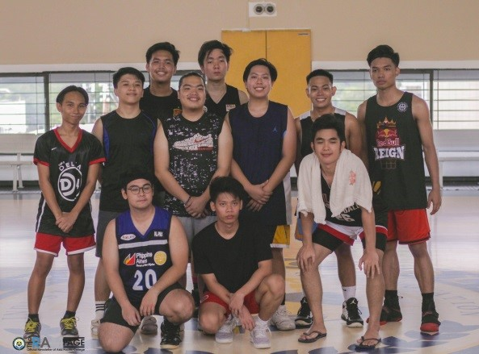
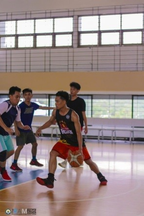
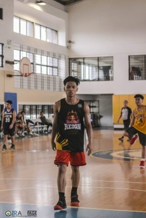

- R1
- R2
- R3
- R4
- R5
- R6
Reflection 1: First Week of USERDES Class
From the first meeting of this course subject, I was already expecting something else because it will be another major subject that focuses on programming. Every time I will get the chance to program, I become excited and I look forward to it. But so far, we are still having an intro for the subject and concept building about design.
Our activities from the past meetings had been very interesting and made me want to design a program already. Also, I was able to understand the word design in general and in technical terms. I comprehended that design is more about planning for creating something and this is what I answered during that discussion.
I am really looking forward to designing of an actual program which is happening soon. This recent task that asks us to create a web design for our first activity will be my starter for learning program designing. I hope mine turns out well organized and something innovative in design.
Submitted 2019 July 14, 1:33 AM
Reflection 2: Need Finding and Paper Prototyping
On to our second week, I can say that I am learning more. This course subject has widen my knowledge on design by going back to fundamentals. On the previous week, we tried to define design in order for us to understand it more. This week, we got introduced to a term called need finding. Need finding focuses more on knowing what are the needs of the people currently. This idea of gathering information about what is needed makes accurate decisions for design basis. When we design according to demand, we get to be more efficient in making something because it is made according to what is currently needed.
Having this concept made me realized that it is not only applicable to design, but also to decision making in our daily lives. We can focus more on what is needed rather than what we just wanted in order for us to make more sense. We must first prioritize our needs in order for us to improve efficiently but we should still give ourselves what we want from time to time.
Another thing we did for this week is the paper prototyping. I was already able to do prototyping but using a web app that allows us to make an actual prototype of an app. What we did on the paper is more like a wireframe of an app. Illustration of app visuals allows a developer to see an image of a desired app. In this way, they can identify how to make it work and interactive in design.
Submitted 2019 July 15, 12:07 AM
Reflection 3: First Web Application using Github and Heroku
For this week, I am starting to understand the flow of our lessons as we proceed to making our basic website. We were able to translate our introduction activity before as a website and it is something that I am really into. I find it interesting to program anything whether it is for frontend or backend of a program. For this certain activity we focused more on the frontend as expected for a user interface design class. Although this is not my first time making one because I already made several web applications before for projects so this could be my first only for this specific subject.
At first, I just want to recycle a web application we did before in senior high school. I kind of thought that the information I have for this specific activity will fit to my existing project before. It would be easier for me because I just have to revise the details of the project and I will be done faster. But then I realized, it would be better if I try to do a new one for me to refresh my knowledge in web programming, specifically dealing with HTML. It turns out that I was not wrong. I encountered several code errors that I was not sure if I already had before. Also, I was able to discover easier techniques in organizing the whole code and compiling it in an efficient way. This includes compiling of assets such as CSS, images and javascript. I was also able to manually install bootstrap and fontawesome in the web app which helped me debug the webpage faster because I do not need to import a web library every time I will run the app.
On our future development of our webpages, I look forward to more techniques I can discover along the way as I try to understand more libraries and not just import them. My goal is not just to copy others’ existing knowledge on web design but also, to make my own out of scratch.
Submitted 2019 July 30, 12:04 AM
Reflection 4: Userinyerface - Worst UI Practice
For this specific activity, I honestly had a hard time right at the start of this quiz. There are so many things that are not usual upon opening the website such as buttons and labels for sign up or login. I was so confused on how to navigate the web app because it is designed in a way that it will confuse us users. I thought I already meet the username and password requirements and it was not just loading for a while. But after sometime, I realized that my entry is invalid and I ended up trying several passwords that might be accepted as a valid one. After several attempts, I did not really remembered what I entered and I was just accepted.
The first part already took up 4 mins of my time and I was just worried that I might get a low score for this said quiz. When one of my classmates asked about the time and confirmed that the first attempt will be understandable to take us long, I just continued. I finished the quiz after 7 mins and did not bother to take a second attempt. For me, the first one is already enough because taking it again won’t make sense to me because I already know how to solve this puzzle-like sign-up process.
In conclusion, this activity told us what to avoid when making a user-interface. We must take from the quiz what is confusing for users and how we could make things easier for them when it is us already who is going to make one. It is a must for us to build an interface wherein it is easy to understand and navigate to avoid confusion with the goal of every element in an app.
Submitted 2019 July 30, 12:24 AM
Reflection 5: SOCIT Fest Experience
 This year’s SOCIT Fest had been a fun experience for me. Compare to last year, I wasn’t able to attend a lot of events and was able to attend few seminars. For this year, I was able to take part to several seminars arranged by the organizers.
Me and my blockmates attended a seminar about cognitive learning wherein the speaker showcased an actual hololens. The hololens has really cool features mainly about mixed reality. Mixed reality is the integration of virtual reality with augmented reality. This makes interactions with holograms possible. For me that was my most favorite seminar and it made me interested on having my own hololens in the future.
 I also watched my friends who participated in the Mobile Legends Tournament which is arranged by Gaming Genesis. I also took part in the sports fest specifically for basketball. I teamed up with my block mates and we were able to reach the finals. We came up short in the championship game but it was a fun experience for us. SOCIT week wouldn’t really be successful without the efforts of the organizers which are mostly from my block. More than half of my block mates had been busy for this event because a lot of them are officers of IT organizations inside the campus. I admire their hard work and commitment in making the events possible. Though I must admit that from the opening day it has been shaky because of lack of participants in initial events of the fest. I really enjoyed this year’s SOCIT Fest and I look forward for more next year.
Submitted 2019 July 30, 12:24 AM
Reflection 6: First Half of USERDES
The first half of User Design class has been really interesting and interactive for me. I was able to test my creativity in making designs specifically for layouts. I always tried to bring something new for me and avoid making designs I already did. Every task from the first half was able to challenge me and my creative thinking.
I can say that the midterm project is the one that challenged me the most. Given that the task is quite complicated and needs a lot thinking, what made it harder is we need to work on it as group. My teammates and I really been shaky at the start because we don’t have a concrete idea for an app. We had to make revisions which is part of it to make better. Luckily, we ended up with a great app idea which we are able to present at midterms. What also like about this class is the presentations. Most the time it is me who makes our presentations and I always try to make it interesting and structured.
These are some few challenges that I loved about this class because I remembered myself before entering college wherein I planned to take a course related to digital arts. In this class, I was able to practice my designing skills which I was able to use in some of our other projects outside this class.
For the second half, I admit that I haven’t been present for the start of this half but I always try to keep up with the requirements because by far, we’re still having many interesting activities and projects that I would like to do. One thing that I can improve on for this class is my presence for the actual class time. So that I can participate and learn more in the class discussions rather than just studying on my own.
Submitted 2019 July 30, 12:24 AM
About Me
My name is Brent Millen P. Manzo, I have a passion for visual arts, specifically dance.
View more
LinkedIn: Learning
UX Foundations: Accessibility
LinkedIn: Learning
UX Foundations: Prototyping